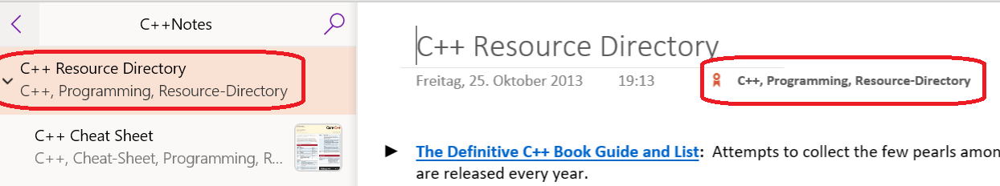

The Preferences Tab

☝️ Numbered dialog elements are referenced list item indices.
In the Dialog Preferences section you can disable or enable the always on top behavior of the Tag Pages or Find Tagged Pages dialog.
The Operating System Integration section allows select or deselect the Windows Search Service for finding page tags. By default this option is on.
When this option is unchecked a slower, alternative approach for finding page tags is used. Unchecking this option may be necessary on systems where the OneNote/ Windows Search Service integration is broken or turned off.
In Tag Options section you can configure format and display of page tags on a OneNote page.
☝️ Tag formatting is applied to new tags only. Pre-existing tags remain unchanged.
The available tag format options are:
Capitalized-
The first character of each tag is changed to uppercase. If a tag has multiple words separated by space, the first character of each word is changed to uppercase.
Examples:
- Tag input
documentationis changed toDocumentation. - Tag input
project documentationis changed toProject Documentation.Hashtag
- Tag input
-
Tags are formatted as hashtags by adding the number sign or pound sign
#(also known as the hash character) at the beginning of each tag name.For example tag input
Documentationis changed to#documentation
As Entered- The tag entered by the user is used as typed. No formatting is applied. Multi-word tags can be separated by spaces.
The available tag display options are:
Below Page Title-
Tags are displayed below the title of a OneNote page:

⚠️ The tags are represented as editable text, but edits do not change the actual Page Tags. To change page tags the Tag Pages dialog must be used. If the tags were inadvertently edited, the displayed tags can be re-synchronized with the internal tag database by executing the Update command or using the Update action of the Tag Pages dialog.
Icon in Page Title-
A single OneNote tag is added to the page title:

To see the page tags just hover the mouse over the tag icon.
This option has been introduced to address negative side effects in the OneNote Windows Store version which would display the page tags in its summary view instead of a page summary:

Configure the import of tags, which are embedded in page content. Imported tags can be utilized by the Find Tagged Pages dialog for faceted search. However, if the original tags are are changed in the page content, the tags require re-import by either executing the Update command or using the Update action of the Tag Pages dialog.
☝️ Changes to these options do not take effect on existing OneNote pages until they are tagged again or updated by either executing the Update command or using the Update action of the Tag Pages dialog.
Map OneNote Tags to Page Tags-
With every tagging operation the page content is scanned for OneNote paragraph tags. Each OneNote tag found mapped to a corresponding Import Page Tag. Imported Page Tags have a special marker prefix, so that they can be distinguished from genuine page tags:

Map Hashtags in Page Text to Page Tags- With every tagging operation the page content is scanned for hashtags embedded in the page text. Each hashtag is mapped to a corresponding Import Page Tag. Page Tags originating from hashtags have a special marker prefix, so that they can be distinguished from genuine Page Tags: